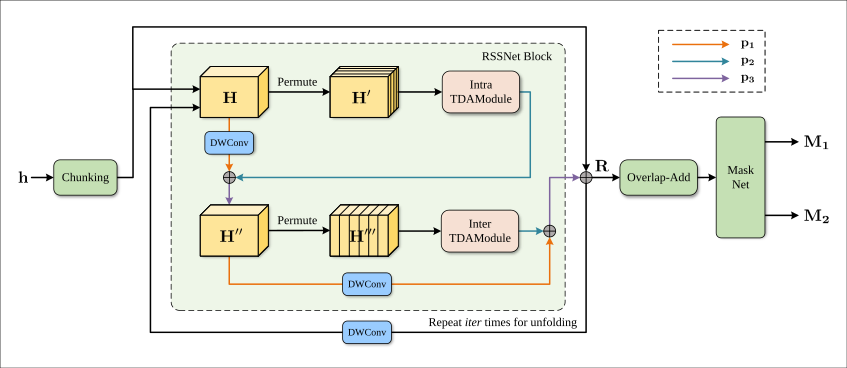
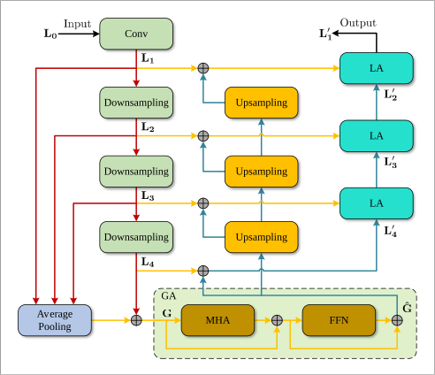
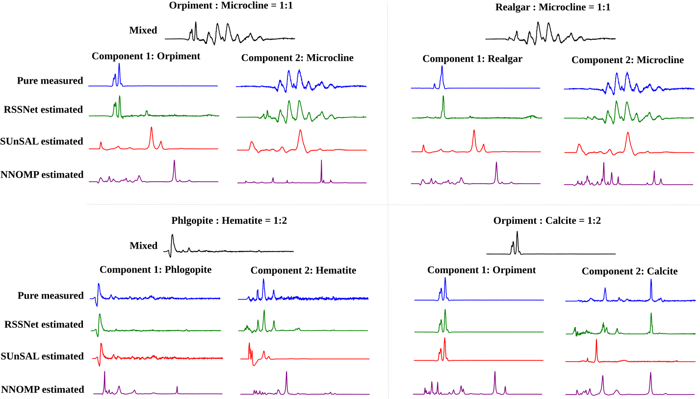
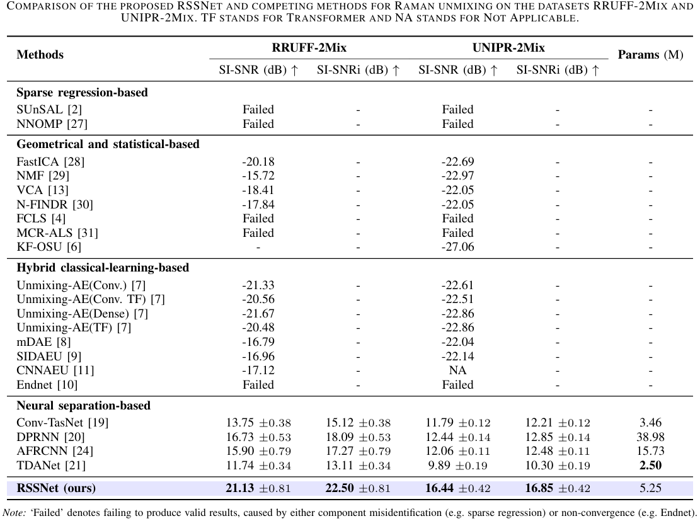
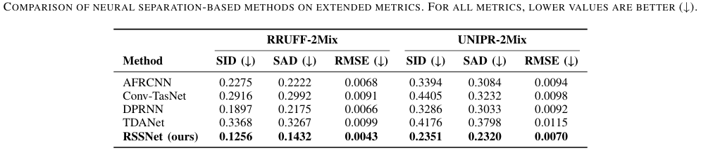

Abstract
Raman spectra obtained in real world applications are often a noisy combination of several spectra of various substances in a tested sample. Unmixing such spectra into individual components corresponding to each of the substances is of great value and has been a longstanding challenge in Raman spectroscopy. Existing unmixing methods are predominantly designed to invert an overdetermined mixed model and therefore require multiple mixed spectra as input. However, open domain and/or non-cooperative detection applications in Raman spectroscopy such as controlled substance detection, call for single-channel solutions which can identify individual components from thousands of candidates by analyzing only a single noisy mixed spectrum. To our knowledge, sparse regression is the only existing solution which can cope with this scenario, yet it has very low tolerance to noises and can hardly be applicable in practice. To address these limitations, we introduce a novel neural approach for single-channel Raman spectrum unmixing inspired by speech separation. It aims at solving underdetermined systems and can decompose a noisy mixed spectrum from a library of thousands of components (substances). The core of our method is a deep separation neural network (RSSNet) which takes a mixed spectrum as input and outputs spectra of pure components. We created two synthetic datasets of single-channel Raman spectra unmixing and demonstrated feasibility and superiority of RSSNet on these datasets (outperform competing methods by >4dB). Furthermore, we verified that RSSNet, trained solely on synthetic data, can successfully unmix real-world mixed spectra of mixtures of mineral powders, exhibiting strong generalization. Our approach represents a new paradigm for Raman unmixing and enables new possibilities for fast detection of Raman mixtures.
Neural Separation Mechanism

The core of our unmixing method lies in the Neural Separator, which employs a sophisticated dual-path design. It processes the encoded latent representation h to estimate highly accurate masks through three main stages:
- Chunking (Sequence Segmentation): The 1D latent feature sequence h is first segmented into overlapping chunks, reshaping it into a 3D tensor H. This step facilitates efficient local-global feature modeling.
- RSSNet Block (Dual-Path Processing): This block acts as the computational engine and is repeated multiple times. It utilizes an Intra-TDAModule to model local spectral dependencies within each individual chunk, and an Inter-TDAModule to capture global contextual dependencies across different chunks. Furthermore, Depth-Wise Convolutions (DWConv) are strategically integrated into the pathways to extract cross-channel relationships, significantly enhancing the network's modeling capacity.
- Overlap-Add & Mask Net: After the iterative refinement, the Overlap-Add operation effectively reverses the chunking process, reconstructing the chunks back into a continuous feature sequence. Finally, a Mask Net maps these features into component-specific masks (M1 and M2).
Bio-Inspired Feature Modulation: The TDA Module
The architectural design of our RSSNet Block is fundamentally inspired by the Top-Down Attention (TDA) mechanism.
Mimicking the biological top-down attention in the visual and auditory cortex, the TDA module integrates downsampling, a Global Attention (GA) module, and a Local Attention (LA) module to process sequential data effectively.
As illustrated in the figure, it first extracts a global attention signal using the GA module, which refines global features by applying a multi-head attention (MHA) layer and a feed-forward network (FFN) layer. This global context acts as a top-down signal. The LA module then uses this to generate adaptive parameters, progressively refining the feature representations back to the original resolution.

The architecture of the Top-Down Attention (TDA) module.
Unmixing Real-World Mixtures
To evaluate our model's real-world applicability, we tested RSSNet on actual physical mixtures of mineral powders, including Orpiment, Microcline, Realgar, Hematite, Phlogopite, and Calcite. The comparison below highlights the robustness of our approach:

As shown in the top row, when the pure spectra in the mixture have comparable intensities, the characteristic peaks of both components are clearly visible. In contrast, the bottom row presents a much more challenging scenario where the components differ significantly in magnitude. In these highly unbalanced mixtures, the signal of the minor component exhibits much lower amplitude and is nearly invisible, submerged by the dominant one.
Even under such severe conditions, RSSNet accurately extracts the pure constituent spectra from a single noisy observation. Traditional sparse regression methods (SUnSAL, NNOMP), however, struggle with this physical noise and frequently fail to identify the minor components. This demonstrates RSSNet's exceptional sim-to-real generalization.
Quantitative Results
We evaluated RSSNet on two synthetic single-channel unmixing datasets: RRUFF-2Mix and UNIPR-2Mix. The results demonstrate that RSSNet establishes a new state-of-the-art for this highly underdetermined task.


BibTeX
@misc{long2026braininspireddeepseparationnetwork,
title={A Brain-Inspired Deep Separation Network for Single Channel Raman Spectra Unmixing},
author={Gaoruishu Long and Jinchao Liu and Bo Liu and Jie Liu and Xiaolin Hu},
year={2026},
eprint={2604.22324},
archivePrefix={arXiv},
primaryClass={cs.LG},
url={https://arxiv.org/abs/2604.22324},
}